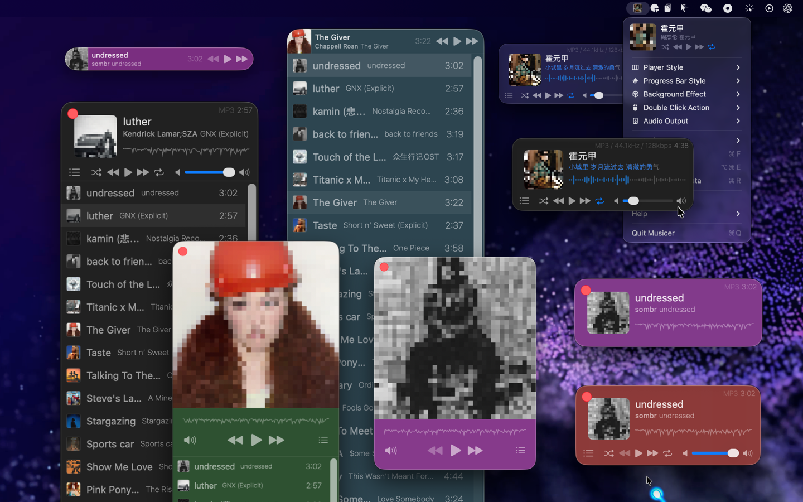
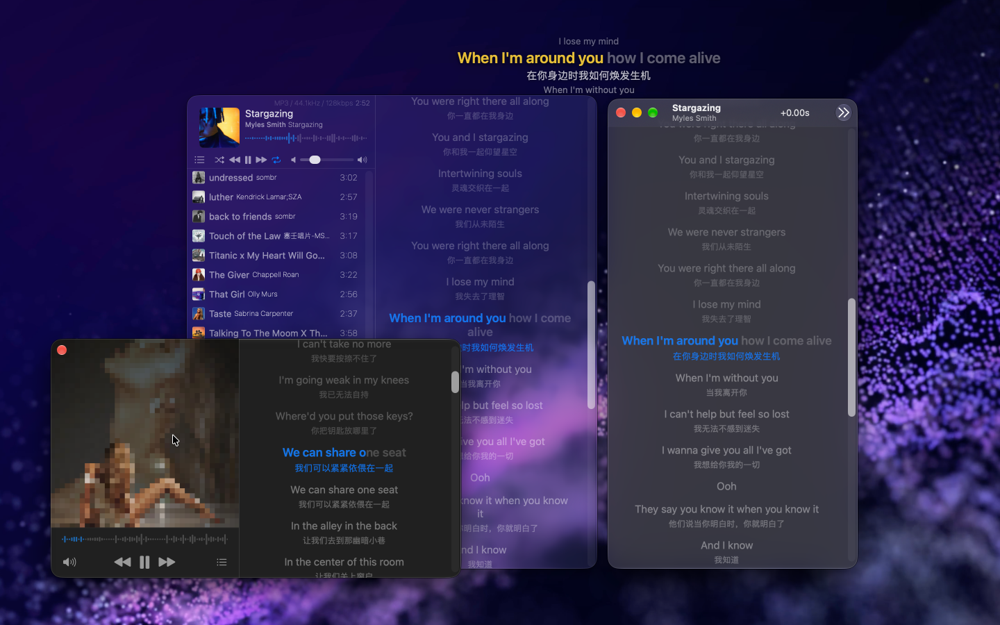
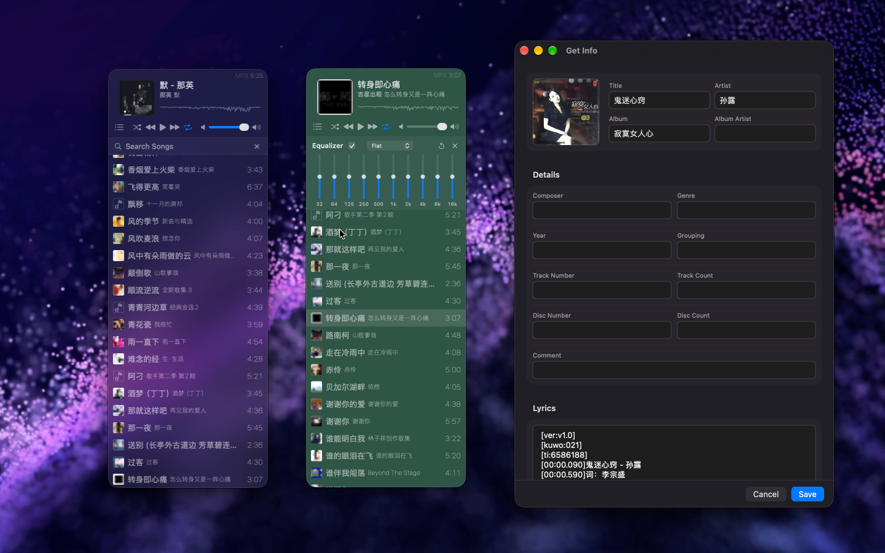

Mini and convenient local music player, lightweight and practical, specially designed for playing local audio, supports a variety of common audio formats, enjoy your music anytime, anywhere!
Supported formats: MP3, AIFF, AMR, WAV, CAF, AAC, AC3, FLAC, M4R, M4A, etc.
Musicer supports the Model Context Protocol (MCP). Connect it to an AI client such as Claude, Cursor, or Grok, then use natural language to search for music, play, pause, skip tracks, and read the currently playing track and its lyrics.
# Add the Musicer MCP server
$ grok mcp add Musicer \
--transport stdio \
--scope user \
-- "/System/Applications/Musicer.app/Contents/MacOS/Musicer" --mcp
# Remove the Musicer MCP server
$ grok mcp remove musicer
# List configured MCP servers
$ grok mcp list
# Diagnose the Musicer MCP server connection
$ grok mcp doctor Musicer
Alternatively, configure it directly in ~/.grok/config.toml:
[mcp_servers.musicer]
command = "/Applications/Musicer.app/Contents/MacOS/Musicer"
args = ["--mcp"]
enabled = true
You can also add the following to an MCP client configuration, such as Claude Desktop or Cursor:
{
"mcpServers": {
"musicer": {
"command": "/Applications/Musicer.app/Contents/MacOS/Musicer",
"args": ["--mcp"]
}
}
}